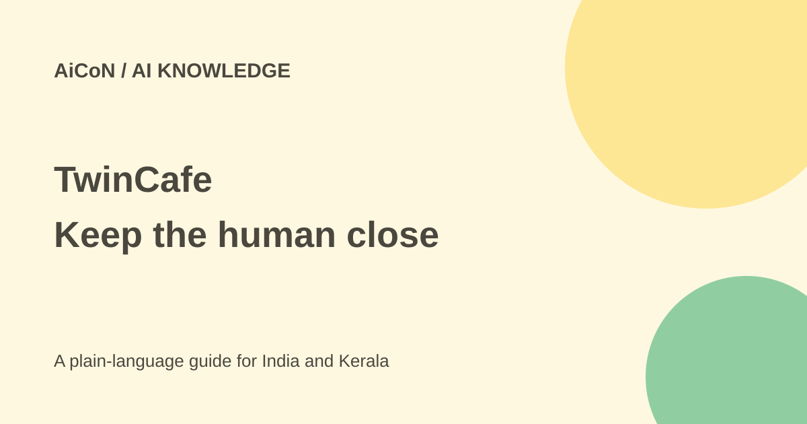

TwinCafe: your AI twin is not the real you
TwinCafe uses material you provide to build an AI twin that can answer questions. Its own privacy policy says those answers are not real-time messages from the named expert unless the expert joins or edits them.

What does a digital twin do?
TwinCafe describes a service where your knowledge can help people when you are unavailable. You can share material, let a twin answer questions and step into the conversation to add context or correct it. Visitors can also talk to other experts' twins.
The policy describes documents, voice notes, text, instructions and other submitted material used to build these twins. The material may be stored, indexed and retrieved to generate replies. This is an AI knowledge service, not proof that it reproduces your judgement or has become you.
Keep AI and human answers distinct
The privacy policy explicitly says twin replies may be inaccurate, incomplete or out of date. They are not a real-time communication from the named expert unless the expert separately chimes in or edits the answer.
That distinction matters for a teacher, founder or consultant. A plausible answer could still misstate a policy, promise a service or suggest something you would reject. Label the twin clearly, explain its scope and provide a human escalation route. Do not let it make commitments simply because it sounds familiar.
Access and price
The current public homepage presents a live product and links to interaction with twins. This check did not create an account or verify every India account feature. The pages checked did not publish a complete subscription price or establish that creating and using a twin is unlimited and free.
The policy separately refers to paid expert calls, checkout and payout information. That is not a subscription price for the AI twin. Read the relevant account and call terms before enabling paid services. The original “mobile app in coming weeks” statement is not a confirmed app-store release in this guide.
Who can see conversations?
The policy says questions and conversation history may be visible to the expert who owns the twin and, where applicable, connected clients or reviewers. Do not treat chatting with someone else's twin as a private conversation that only an AI sees.
Third-party AI and embedding providers may process prompts, retrieved context and outputs to deliver and secure the service. Voice material can also be transcribed and indexed. A no-sale statement is not the same as no external processing.
You retain ownership of submitted content, but grant the service rights to host, store, reproduce, process, display and distribute it as necessary to operate. Account content can remain while the account is active or needed for the service. Deletion requests are verified and legal retention can apply; the policy does not promise an exact immediate-erasure deadline.
How to build a safer twin
- Read the current privacy and account terms before uploading material.
- Start with documents you own and are permitted to share, such as a public article or general lesson.
- Remove customer details, passwords, private student records and confidential business material.
- State the twin's topic limits and make its AI status clear to visitors.
- Ask test questions, including cases where it should say it does not know.
- Check whether answers follow the source material and whether people can reach the real expert.
- Review interactions and update outdated knowledge. Confirm sharing controls before inviting others.
For Kerala readers
A teacher could try a public lesson outline, or a small business owner could test general product FAQs. Verify Malayalam and mixed-language performance with real samples; the cited pages do not establish a Malayalam accuracy level. Keep school, employer and client permissions separate from your ability to upload a file.
For medical, legal or financial topics, an expert-labelled twin is not a substitute for current professional advice from a responsible human. Avoid giving it material that you cannot safely have repeated.
What changed since the original post?
The archive post stressed answers in your style and human control. This guide adds the policy's explicit AI-versus-human distinction, conversation visibility, provider processing and retention limits. Public pricing and mobile-release uncertainty remain open rather than guessed.
Frequently asked questions
Is an answer actually from the expert?
Not unless the expert separately joins or edits it.
Can the expert see my questions?
The policy says conversations may be visible to the owner and relevant reviewers.
Is it free?
A complete public subscription schedule was not verified.
Sources: Official homepage · Privacy policy. Checked 7 October 2026.